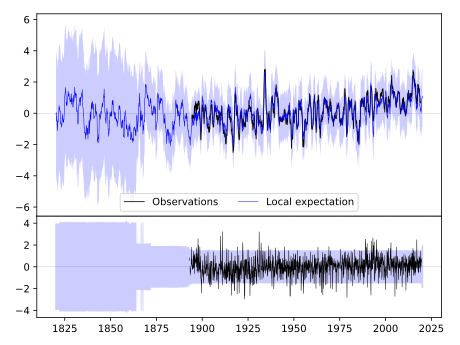
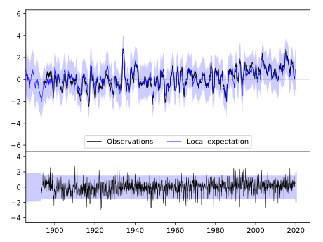
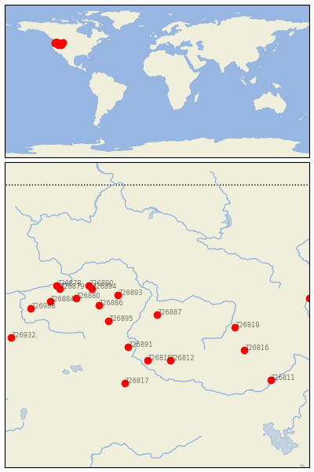

NEW MEADOWS RS [USA]


| Neighbour | Name | Country | Distance | Lon/Lat | Years |
|---|
| 726887 | NEW MEADOWS RS | USA | 2 | -116.3, 45.0 | 1893-2019 |
| 726893 | WALLOWA | USA | 115 | -117.5, 45.6 | 1893-2019 |
| 726895 | BAKER CITY AP | USA | 120 | -117.8, 44.8 | 1893-2019 |
| 726891 | VALE | USA | 132 | -117.2, 44.0 | 1892-2019 |
| 726886 | LA GRANDE | USA | 145 | -118.1, 45.3 | 1911-1965 |
| 726810 | NAMPA SUGAR FACTORY | USA | 157 | -116.6, 43.6 | 1864-2020 |
| 726812 | ARROWROCK DAM | USA | 158 | -115.9, 43.6 | 1893-2019 |
| 726894 | WESTON | USA | 179 | -118.3, 45.8 | 1891-1954 |
| 726890 | MILTON FREEWATER | USA | 191 | -118.4, 45.9 | 1872-2019 |
| 726818 | MAY 2SSE | USA | 194 | -113.9, 44.6 | 1894-2019 |
| 726880 | PILOT ROCK 1 SE | USA | 203 | -118.8, 45.5 | 1890-2020 |
| 726816 | MACKAY LOST RIVER RS | USA | 246 | -113.6, 43.9 | 1894-2019 |
| 726817 | DANNER | USA | 246 | -117.3, 42.9 | 1897-2019 |
| 726879 | HERMISTON 1 SE | USA | 250 | -119.3, 45.8 | 1893-2019 |
| 726878 | UMATILLA | USA | 261 | -119.4, 45.9 | 1902-1965 |
| 726884 | HEPPNER | USA | 262 | -119.6, 45.4 | 1889-2019 |
| 726988 | CONDON | USA | 306 | -120.2, 45.2 | 1893-2019 |
| 726811 | ABERDEEN EXP STN | USA | 357 | -112.8, 43.0 | 1893-2019 |
| 726932 | PRINEVILLE | USA | 364 | -120.8, 44.3 | 1896-2019 |
| 726892 | NORRIS MADISON PH | USA | 372 | -111.6, 45.5 | 1893-2019 |